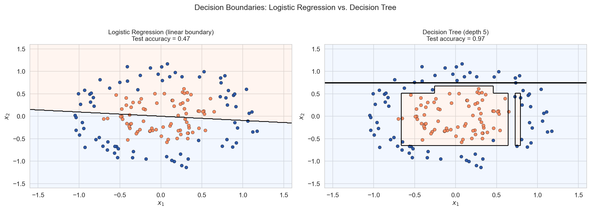
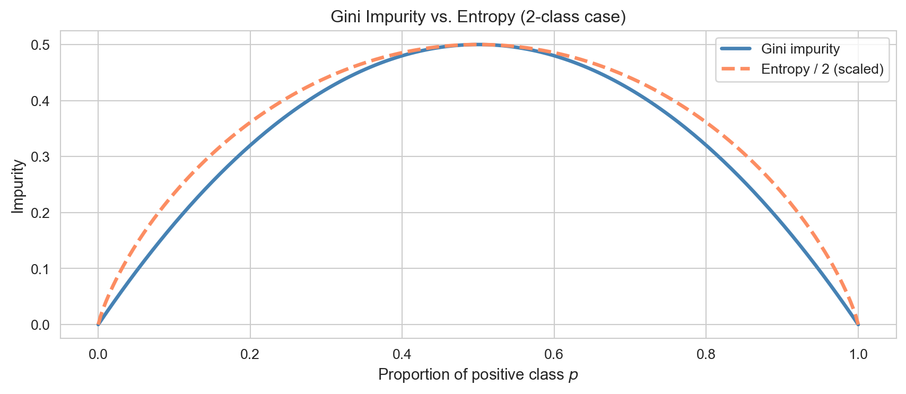
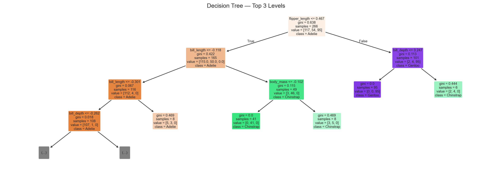

An introduction to classification including logistic regression for multiple classes, decision trees with Gini impurity and pruning, and random forests as a variance-reducing ensemble method.
Author
John Robin Inston
Published
May 22, 2026
Modified
May 22, 2026
ImportantLearning Objectives
Understand the classification problem and how it differs from regression.
Extend logistic regression to multiple classes using the softmax (multinomial) formulation.
Define Gini impurity and describe how decision trees are grown using recursive binary splitting.
Control overfitting with pre-pruning parameters and cost-complexity post-pruning.
Describe random forests as bagging with feature subsampling, and interpret mean decrease in impurity.
Evaluate classifiers with confusion matrices, precision, recall, and F1-score.
In regression, the response is continuous: \(Y \in \mathbb{R}\). In classification, the response is categorical: \(Y \in \{1, 2, \ldots, K\}\). The goal is to learn a decision rule\(\hat{f}: \mathcal{X} \to \{1, \ldots, K\}\) that maps features to class labels as accurately as possible.
Task
Response classes
Email spam detection
Spam / Not Spam
Medical diagnosis
Disease / No Disease
Handwritten digit recognition
0, 1, 2, …, 9
Species identification
Species A, B, C, …
Logistic Regression for Multiple Classes
Binary logistic regression (covered in the GLM chapter) models the probability of the positive class via the sigmoid function. For \(K > 2\) classes, there are two standard extensions.
One-vs-Rest (OvR): fit \(K\) separate binary classifiers, each asking “is this class \(k\) or not?”. Predict the class whose classifier returns the highest probability.
Multinomial (softmax): fit all classes simultaneously:
\[P(Y = k \mid \mathbf{x}) = \frac{\exp(\mathbf{x}^\top \boldsymbol{\beta}_k)}{\displaystyle\sum_{j=1}^{K} \exp(\mathbf{x}^\top \boldsymbol{\beta}_j)}.\]
sklearn’s LogisticRegression uses the multinomial approach by default for \(K > 2\). The decision boundary remains linear — each class is still separated by a hyperplane.
Why go beyond logistic regression?
When the true decision boundary is non-linear, logistic regression is structurally unable to recover it regardless of sample size.

Two concentric circles cannot be separated by any straight line — logistic regression fails. A decision tree carves the space into axis-aligned rectangles and recovers the circular boundary well.
The Palmer Penguins Dataset
We use the Palmer Penguins dataset — a multiclass classification benchmark with three penguin species measured across physical characteristics.
Response: species — Adelie, Chinstrap, Gentoo (three classes).
Predictors: bill length, bill depth, flipper length, body mass, sex, island.
Before fitting models it helps to understand the evaluation metrics we will use.
Accuracy is the simplest: fraction of all predictions that are correct. But accuracy can be misleading when classes are imbalanced — a classifier predicting only the majority class can still achieve high accuracy.
ImportantConfusion Matrix
For \(K\) classes, a \(K \times K\) table where entry \((i, j)\) is the number of observations of true class \(i\) predicted as class \(j\). Diagonal entries are correct predictions; off-diagonal entries are misclassifications.
For each class \(k\), treating it as “positive” vs. all others:
Confusion matrix for logistic regression on the test set.
Decision Trees
What is a decision tree?
A decision tree partitions the feature space into rectangular regions using a recursive sequence of binary splits. Each leaf is assigned the majority class of training observations that land there. Decision trees are fully non-parametric — no distributional assumption about the boundary shape.
Gini impurity
At each node we search for the feature \(j\) and threshold \(t\) that most reduce impurity in the resulting child nodes.
ImportantGini Impurity
For a node containing observations with class proportions \(p_1, \ldots, p_K\): \[G = 1 - \sum_{k=1}^{K} p_k^2.\]\(G = 0\) means the node is pure (all one class). \(G\) is maximised when classes are equally represented.
The Gini gain of a candidate split is: \[\Delta G = G(\text{parent}) - \frac{n_L}{n}\,G(\text{left}) - \frac{n_R}{n}\,G(\text{right}).\] The best split \((j^*, t^*)\) maximises \(\Delta G\).

Gini impurity and entropy as functions of the positive-class proportion in a 2-class problem. Both are maximised at p = 0.5 and zero at pure nodes.
Growing and stopping a tree
A tree is grown recursively: find the best split, partition observations into left and right children, and recurse. Key stopping parameters in sklearn are:
Parameter
Effect
max_depth
Hard cap on tree height
min_samples_split
Minimum observations needed to attempt a split
min_samples_leaf
Minimum observations required in each leaf
min_impurity_decrease
Only split if \(\Delta G\) exceeds this threshold
Overfitting
Deep trees memorise the training set rather than learning general patterns.
Train and test accuracy by tree depth. Shallow trees underfit; very deep trees overfit.
Post-pruning: cost-complexity
Pre-pruning uses stopping criteria to prevent the tree from growing too large. Post-pruning takes the opposite approach: grow the full tree, then cut back branches whose impurity reduction is outweighed by their complexity cost.
ImportantCost-Complexity Criterion
For a subtree \(T\) with \(|T|\) leaves, define the penalised training cost: \[R_\alpha(T) = R(T) + \alpha \cdot |T|,\] where \(R(T)\) is the weighted leaf impurity and \(\alpha \geq 0\) is the complexity parameter.
At \(\alpha = 0\) the full unpruned tree is returned. As \(\alpha\) increases, branches are progressively removed. The optimal \(\alpha\) is chosen by evaluating held-out performance across the pruning path.
fig, ax = plt.subplots(figsize=(14, 5))plot_tree( dt, max_depth=3, feature_names=feature_names, class_names=le.classes_, filled=True, rounded=True, fontsize=7, ax=ax,)ax.set_title('Decision Tree — Top 3 Levels')plt.tight_layout()plt.show()

Top 3 levels of the fitted decision tree. Each node shows the splitting feature, Gini impurity, sample count, and class distribution. Leaf colours indicate the predicted class.
Confusion matrix for the decision tree on the test set.
Random Forests
The variance problem with single trees
Decision trees have high variance: small changes in the training data can produce very different trees. Each split depends entirely on which observations happened to be in the training set; a single influential observation can redirect an entire branch.
Bagging: Bootstrap Aggregating
ImportantBagging Algorithm
For \(b = 1, \ldots, B\):
Draw a bootstrap sample\(\mathcal{D}^*_b\) of size \(n\) with replacement.
Fit a full, unpruned tree \(T_b\) on \(\mathcal{D}^*_b\).
Each tree sees \(\approx 63\%\) of observations; the rest form a natural out-of-bag (OOB) validation set. Averaging over \(B\) trees reduces variance — provided trees are uncorrelated.
Feature subsampling: the random forest improvement
If one feature is very strong, all bagged trees split on it first — the trees are correlated and the variance reduction is limited.
ImportantRandom Forest
Bagging + feature subsampling: at each candidate split, consider only a random subset of \(m\) features (default: \(m = \lfloor\sqrt{p}\rfloor\)) rather than all \(p\).
Restricting the features considered per split decorrelates the trees, giving greater variance reduction. The slight bias increase from seeing fewer features per split is usually outweighed by the variance benefit.
Feature importance: Mean Decrease in Impurity
ImportantMean Decrease in Impurity (MDI)
For feature \(j\), sum the weighted Gini gain from every split on \(j\) across all trees: \[\text{Importance}(j) = \frac{1}{B}\sum_{b=1}^{B} \sum_{\substack{v \in T_b \\ \text{split on } j}} \frac{n_v}{n}\,\Delta G_v.\]
ImportantCaveat
MDI can overstate importance for high-cardinality or continuous features. Permutation importance is a more reliable alternative in such cases.
Feature importances by mean decrease in Gini impurity. Flipper length and bill length are the most discriminative features across the three penguin species.
Per-class precision, recall, and F1 for all three classifiers. The random forest leads across most metrics; logistic regression sets the linear baseline.
Model Test Accuracy OOB Accuracy Linear boundary? Interpretable?
Logistic Regression 1.0000 — Yes Coefficients
Decision Tree 0.9403 — No Tree diagram
Random Forest (200 trees) 1.0000 0.9887 No Feature importance only